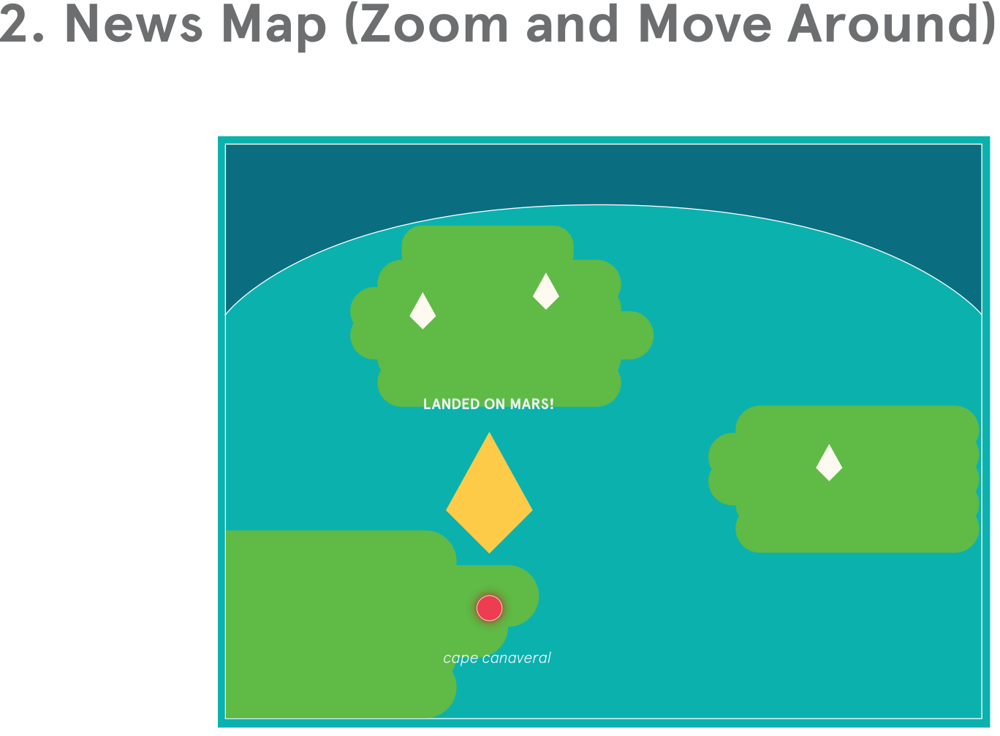

WELCOME TO
Stories Map.
experience that lets you browse up
to the minute news stories based
on real–time geographical region.

Background
You live in a world where “paper” has all the
capabilities that your mobile device has. This
paper device gives you the opportunity to
discover “Breaking News” and navigate through news around the world using your own
personal map.
Two Different Modes
Stories Map provides you with two unique
options of viewing the latest news. Pocket Mode, our compact map, and Map Mode,
our full service, enables you to explore news
anywhere, anytime you desire.
Conveniently alternate between
Pocket Mode
_1.gif)
Map Mode
Zoom in.
Get more details in Full
Experience mode.

get to know your community
better by navigating news stories
around your local areas.
How It Works
Moving between the Pocket mode and the Map mode is very simple. Simply fold the map into a small reactangle for the Pocket mode. Then unfold the map once to view the Control panel, enabling you to customize the Map mode, and continue to unfold for the full Map mode.

fits in your pocket.


reading the news.
open

to control panel.
unfold

to experience more features.
Wireframes
This section explains the navigation
of the both the Pocket mode and the
Map mode. It describes both mode's
structure and functionality.
Pocket Mode
Map Mode

cartography. This device transforms the
user experience by bringing news stories
and map together. With the essence of
printed maps and the functions of digital
maps, it allows users to navigate new
stories in a new unfamiliar way.
Editorial Design for Screen, Spring 17
Instructor: Dylan Grief